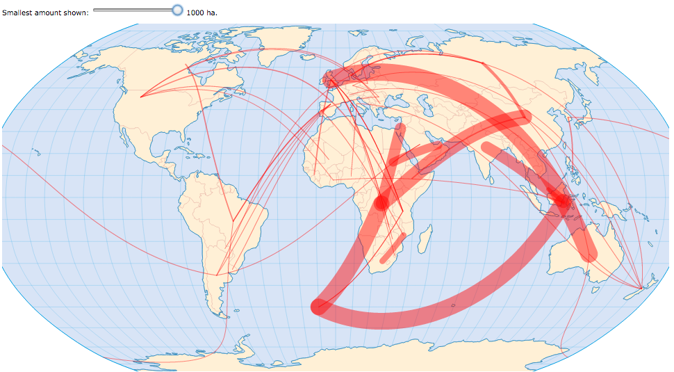
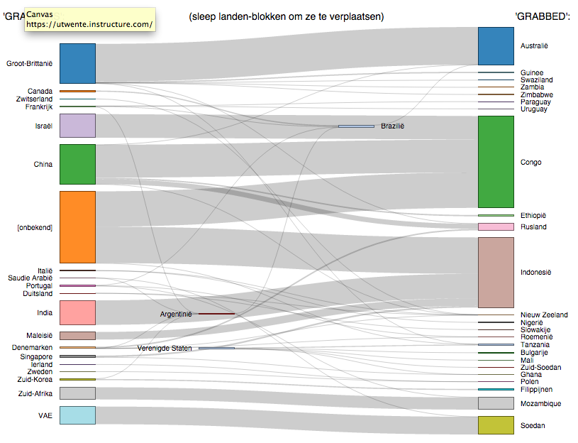
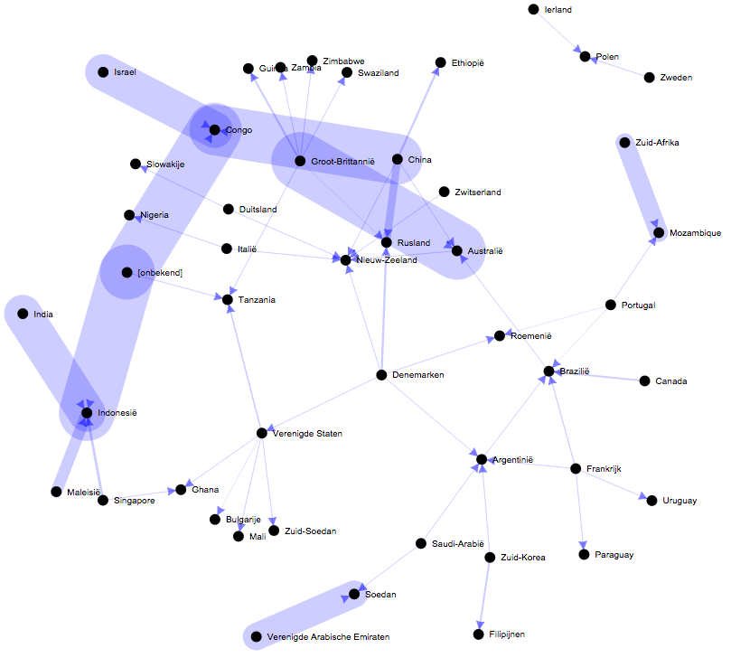
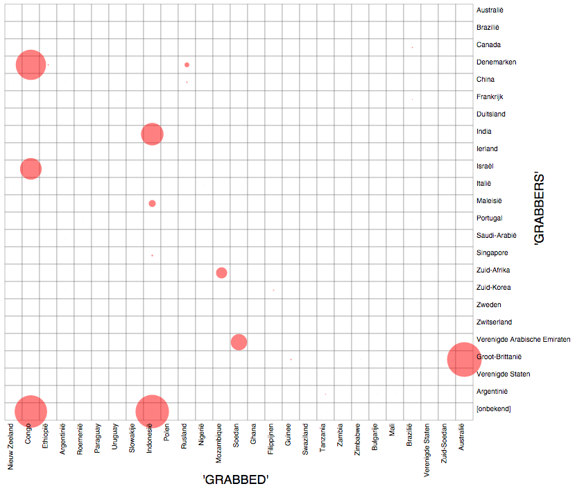

|  In de KAART is de ruimtelijke samenhang het meest expliciet: het is duidelijk waar de betreffend landen liggen. Maar de onderlinge verhoudingen van de hoeveelheden zijn moeilijk te vergelijken, en je raakt het overzicht kwijt als er teveel relaties worden weergegeven. |
 Het STROOMDIAGRAM is wat dat betreft makkelijker te interpreteren, vooral omdat je de landen-blokken kan verschuiven om zo de 'spaghetti' te ontwarren. Ook zie je hier als enige welke landen zowel 'grabber' zijn als 'ge-grabde'... |
|  De NETWERK "graph" is flexibel en interactief, maar het is niet erg duidelijk welke landen de "grabbers" zijn en welke de "ge-gegrabden".... |
 De MATRIX is in theorie goed om per land de relaties te zien, maar hier spelen de grote verschillen tussen de hoeveelheden land (in ha.) ons parten, waardoor alle kleine stromen vrijwel onzichtbaar zijn. |
OVERZICHT -- KAART -- STROOMDIAGRAM -- NETWERK -- MATRIX
Bron data: PNAS vol 110, no.3[This page is part of the visualisation experiments website of B. Köbben]